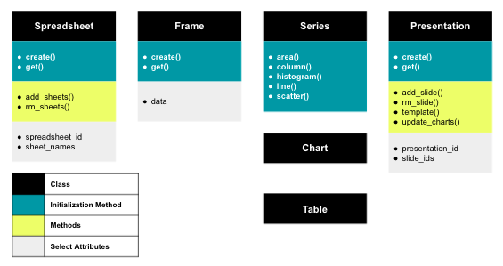

Basic Usage¶
The following page will provide an understanding around the class structure for gslides. To accompany this documentation, see an example of the usage of gslides in this notebook.
Data Flow¶
Taking an object oriented approach, gslides provides classes that represent objects in either Google sheets or Google slides to enable the user flexibility in terms of how there are creating their pipeline and executing their dependencies.
The diagram provides a visual representation of the objects and methods available.
Spreadsheet represents a google sheet
Frame represents a range of data within a google sheet
Series represents a series or multiple series in a chart
Chart represents a chart to be created in google sheets then moved to google slides
Table represents a table to be created in google slides
Presentation represents a google slides presentation. See more info about the methods in Presentation Methods
The modularization of the pipeline allows the user to create new spreadsheets, sheets and presentations or simply get existing sheets and presentations. Additionally, if the user wants to only use a portion of the pipeline they can choose so.
User supplied ID’s¶
From existing spreadsheets and presentations it is possible to retrieve spreadsheet_id, sheet_id, presentation_id through simply looking at a URL.
Initializing classes¶
The Spreadsheet, Frame and Presentation objects are all initialized through either the create() or get() class method.
Passing Chart and Table objects to Presentation.add_slide()¶
The Chart and Table objects are unique in the fact that they don’t need to be created to be passed to the Presentation.add_slide() method. The layout and slide margin parameters set in the Presentation.add_slide() method will optimize the size of the Chart and Table objects that are to be created. The Presentation.add_slide() method handles both the creation of the objects, creation of the slide and the copy of the objects all in one.
Note
There is no restriction on utilizing the create() method of the Chart and Table classes. For Chart, the method will simply create a chart in Google sheets without optimizing the sizing of that chart for it’s destination slide. For Table it will create a table in Google slides.
Presentation Methods¶
Template¶
The template() method allows the user to template data into a given presentation. In your presentation create a placeholder for the text that you wish to be templated like so {{ template_var }}. Pass a dictionary into the template() method with the key template_var and value for the text that you would like to inject. The function will replace all instances of that template_var with text in the presentation.
Update Charts¶
When you modify a chart in google sheets with additional data or update the styling the linked chart in a google slide deck will not update automatically. The update_charts() method finds all charts in a given presentation and updates them to match the google sheets version. This method is useful if you have an existing chart in a presentation and want to update the data but not recreate the chart. You can update the data in Google Sheets with the Frame object and then run the update_charts() method to reflect the new data in your existing chart.
Show & Download Slide¶
With the show_slide() and download_slide() method you can view any given slide in a presentation. This method allows users to easily inspect any slides that they have just created without having to navigate to the google slideshow. These two functions rely on google’s keys for each slide. Simply call the Presentation.slide_ids property to retrieve an ordered list of these keys.